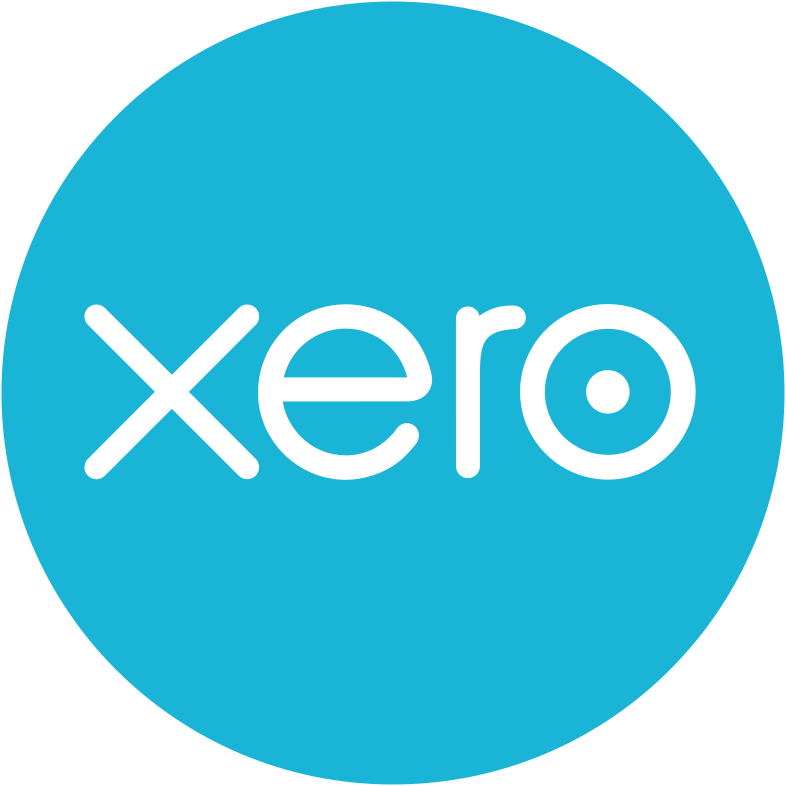
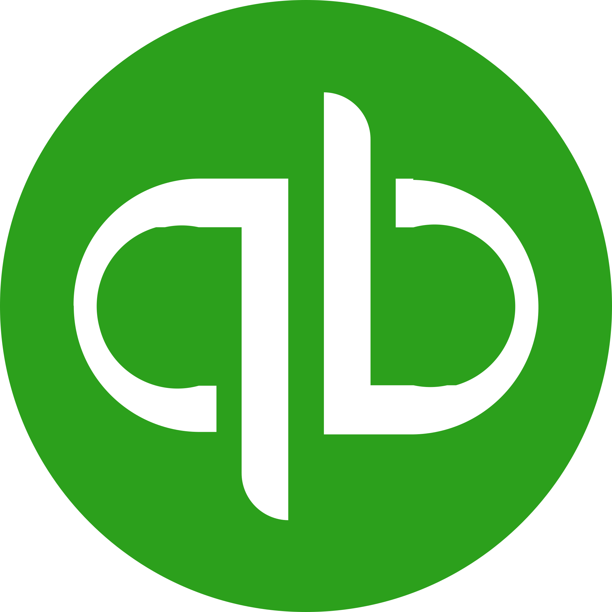

The handoffs run between the tools you already have
Connect a tool once, with your own account. Plunq reads what happens there, does the chasing, and writes the result back. No new system for your team to learn.
The list
Every tool Plunq works with
-
 Procore
Procore
Construction project management
RFIs, submittals, punch items and change orders start the chase — and the answer is written back.
See what it does
-
 Autodesk Construction Cloud
Autodesk Construction Cloud
Common data environment
Issues, RFIs and new document revisions start the handoff, so nobody works from the old drawing.
See what it does
-
 Microsoft Outlook
Microsoft Outlook
Email and calendar
Sends the chase from your own mailbox, and puts the follow-up in the diary.
See what it does
-
 Slack
Slack
Team chat
Posts the notice in the channel that owns the job, and records that it went.
See what it does
-
 Asite
Asite
Common data environment
Approvals, transmittals and the distribution record on a governed CDE.
See what it does
-
 Microsoft SharePoint
Microsoft SharePoint
Document libraries
Project files and registers kept outside the CDE.
See what it does
-
 Microsoft Teams
Microsoft Teams
Team chat
The same notices, for teams that run on Teams.
See what it does
-
Aconex
Common data environment
Correspondence, documents and workflows on major projects.
See what it does
-
Dalux
Field and BIM
Defects, checklists and field issues chased to closure.
See what it does
-
PlanRadar
Defects and inspections
Snagging, inspections and the handover record.
See what it does
-
Zutec
Handover and asset data
Handover packs and asset information, filled as the job runs.
See what it does
-
Bluebeam
Drawing review and markup
The mark-up round trip: set out, comments back, outcome filed.
See what it does
-
Fieldwire
Field tasks and plans
Site tasks kept moving, and tied back to the project record.
See what it does
-
Revizto
Model coordination
Coordination issues driven to resolution between disciplines.
See what it does
-
Newforma
Project information management
Project correspondence carried into the formal record.
See what it does
-
Bentley ProjectWise
Common data environment
Document workflows and distribution on infrastructure projects.
See what it does
-
Trimble Connect
Model and document collaboration
Models and documents shared, with a record of who got what.
See what it does
-
Sage
Accounting and ERP
Approved changes carried into the cost record, without re-keying.
See what it does
-

XeroAccounting
Drafts raised from what was approved on the project.
See what it does
-

QuickBooksAccounting
The same handoff, for teams keeping their books in QuickBooks.
See what it does